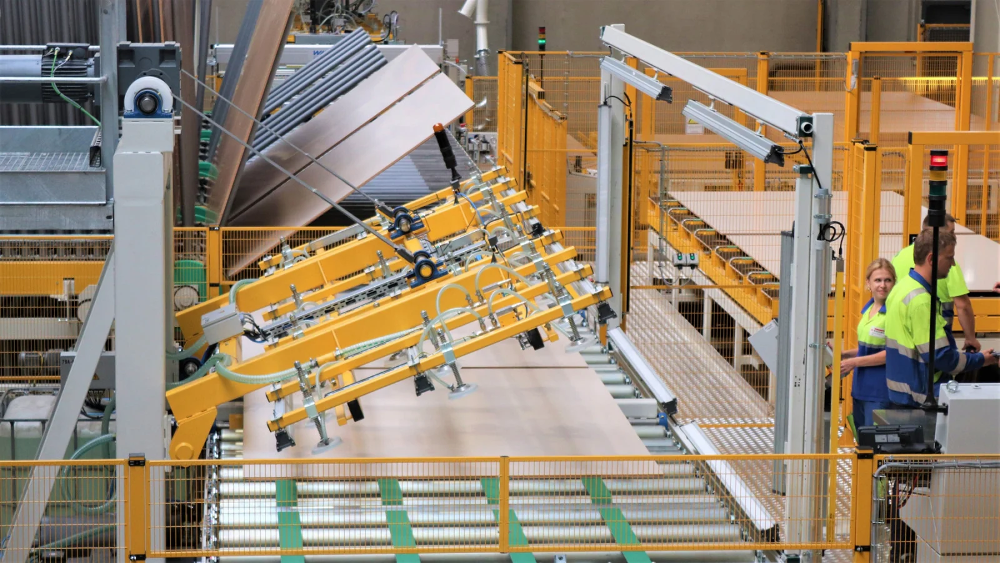
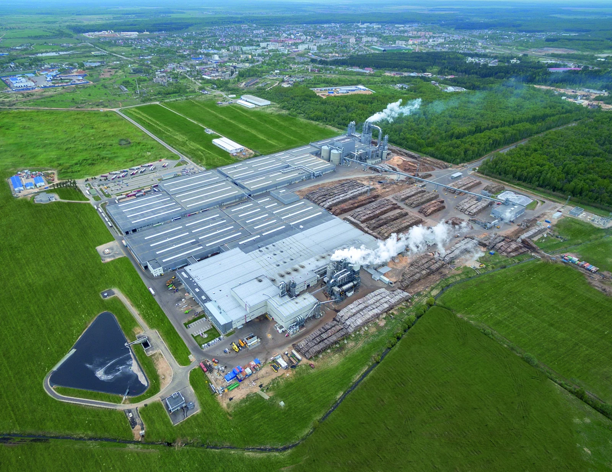
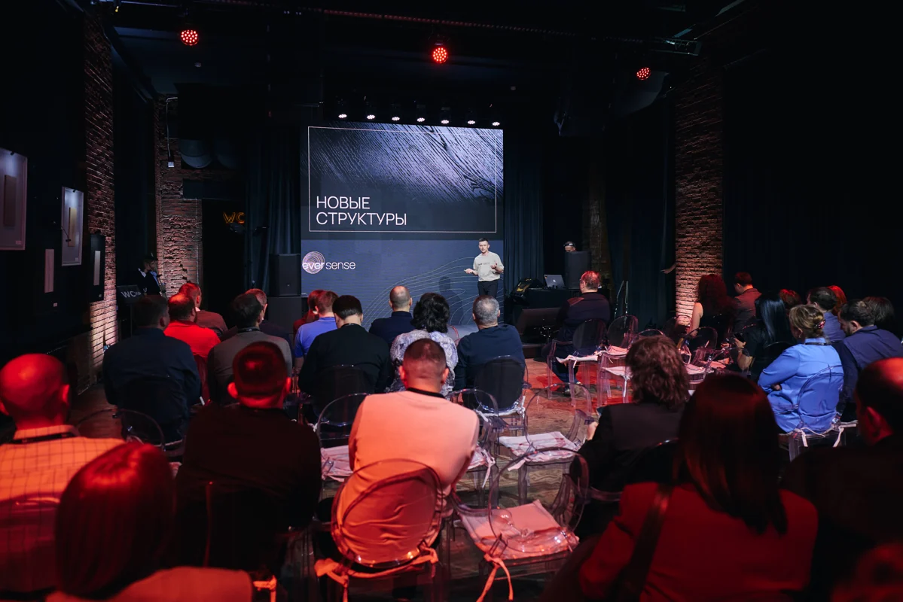
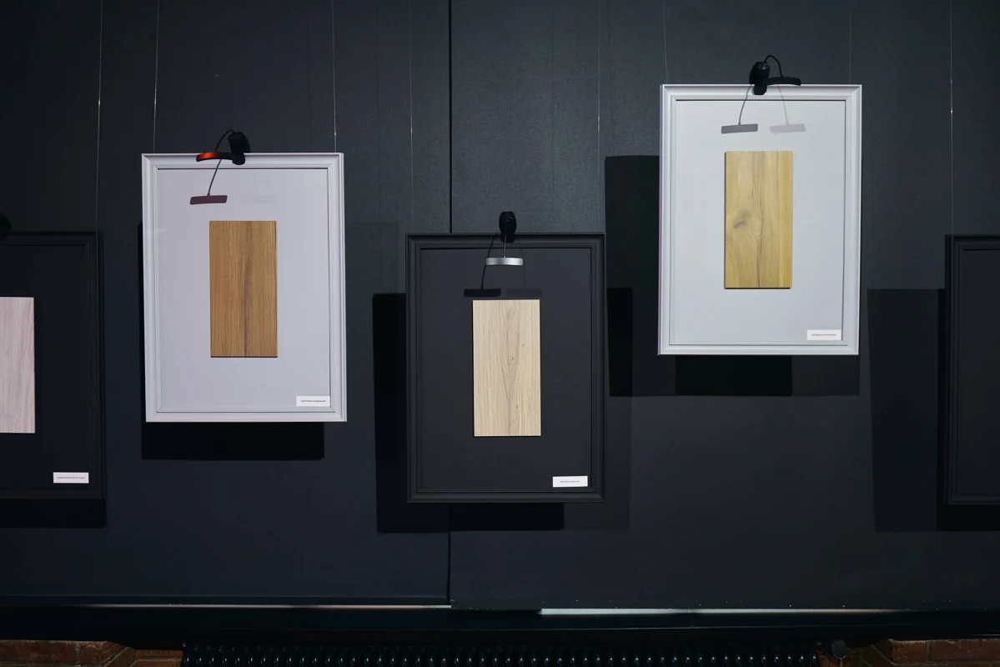

Как создаётся EVERSENSE
Ламинат EVERSENSE выпускают в Гагарине на крупном предприятии полного цикла. Завод отвечает за весь путь от выбора древесины до проверки готовой доски. Накопленный здесь опыт позволил создать флагманскую коллекцию с новыми декорами и фактурами.
Best for Life Design 2025 Продукт года Категория «Напольные покрытия» Как устроено производство
От древесины до готовой доски
Завод сам делает древесноволокнистую основу ламината, подготавливает декоративный слой, прессует плиты и профилирует замки. На той же площадке контролируют свойства плиты и геометрию доски. От неё зависит, насколько плотно панели стыкуются при укладке.[1]
Данные по предприятию на 2025 год.[1]
-
Выбор древесины
На заводе проверяют происхождение и качество сырья. Для основы EVERSENSE используют осину и берёзу.[2]
-
Изготовление основы
Древесину перерабатывают в волокно и прессуют во влагостойкую плиту высокой плотности (HDF).
-
Подготовка декора
На площадке пропитывают декоративную бумагу смолой. Этот слой задаёт цвет и рисунок пола.
-
Прессование и тиснение
В прессе соединяют основу, декор, защитный и стабилизирующий слои. Тогда же покрытие получает рельеф.
-
Раскрой и замки
Плиту режут на доски, а фрезы формируют замки на длинных и коротких сторонах.
-
Проверка и упаковка
На выходе с линии доски сортируют и маркируют перед упаковкой. Заводская лаборатория проверяет сырьё и образцы готовой продукции.[1]
Европейские корни производства
У производственной школы, на которую опирается EVERSENSE, австрийские корни. Её история началась в Тироле в 1961 году с выпуска древесных плит.[3]
В Гагарине первую линию напольных покрытий запустили в 2015 году. Годом позже здесь начали выпускать и древесноволокнистую основу. К запуску EVERSENSE команда уже почти десять лет выпускала напольные покрытия на этой площадке.[4]

Фактура, которую можно почувствовать
Над EVERSENSE работали два года. Для коллекции создали новые декоры и ультраматовые поверхности.[5]
Декор передаёт цвет древесины и рисунок волокон. Фактуру создаёт пресс-пластина, или клише. Для EVERSENSE используют новые пластины, которые при прессовании переносят на покрытие мелкие поры и углубления. В серии «Тихая роскошь» рельеф совпадает с рисунком дерева, поэтому сучки и линии волокон можно ощутить пальцами.[6]

Дуб Лаваредо
На этом декоре чувствуются даже тонкие трещинки. Посмотрите на образец при боковом дневном свете и проведите ладонью вдоль волокон. Так легче оценить глубину рисунка и матовость поверхности.[5]
Посмотреть серию «Тихая роскошь»Свойства, которые проверяют
В испытаниях готового покрытия оценивают геометрию, стойкость к истиранию, пятнам и ударам. Практические свойства можно сверить с техническим свидетельством и инструкцией.[7]
34 класс
Класс использования для помещений с интенсивной нагрузкой.
AC6
Стойкость защитного слоя к истиранию по результатам испытания декора «Дуб Виктория натуральный».
До 72 часов
Заявленная устойчивость к контакту с водой при соблюдении условий монтажа и эксплуатации. Пролитую воду следует убрать сразу.[2]
От московской презентации до «Продукта года»
27–28 февраля 2025 года EVERSENSE представили в московском MJ Hall. Декоры выставили как в галерее, чтобы гости могли сравнить цвет, рисунок и рельеф образцов.[8]


В том же году EVERSENSE стал лауреатом премии Best for Life Design в номинации «Продукт года», категория «Напольные покрытия». Официальный список лауреатов.
Сравните декоры вживую
Сравните оттенки при дневном свете и посмотрите, как выглядит стык двух досок. Так проще подобрать покрытие под мебель и освещение вашего дома.
Источники и фотографии
- Этапы производства, лаборатория и выпуск напольных покрытий в 2025 году. Репортаж с завода в Гагарине.
- Состав древесной основы, конструкция и защита от воды. Материалы EVERSENSE.
- Начало производства древесных плит в австрийском Тироле в 1961 году. История производственной группы.
- Начало выпуска напольных покрытий в 2015 году и древесноволокнистых плит в 2016-м. Карточка предприятия, архив производства · PDF.
- Разработка коллекции и ультраматовых фактур. Анонс коллекции, описание поверхности «Дуб Лаваредо».
- Принцип тиснения и совпадение рисунка с рельефом. Как создают рельеф пресс-пластиной, каталог EVERSENSE.
- Класс использования и результаты испытаний. Техническое свидетельство ТС 06.2282.25.
- Московская презентация и фотографии экспозиции. Фотоотчёт дистрибьютора, материалы организатора.
Фотографии завода. Сделано в Смоленске, Веста Металл.